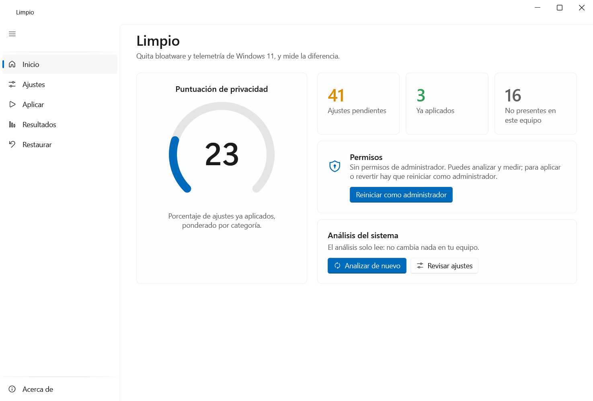

96/100
Gratis · Código abierto · MIT
Un Windows 11 más limpio, y con números que lo demuestran
Quita bloatware y telemetría, y mide qué has ganado: RAM, procesos, servicios y una puntuación de privacidad, antes y después.
v0.1.0 · Windows 11 x64 · 74 MB · no requiere instalar .NET · Todas las versiones

Mide la diferencia
Limpio toma una medición antes de aplicar y otra después. Cambia entre las dos vistas.
5240MB
RAM en uso
187
Procesos
131
Servicios
Valores de ejemplo. Tus resultados dependerán de tu equipo y de los ajustes que apliques.
Todo lo que necesitas, sin ruido
60 ajustes en 7 categorías
Apps, telemetría, privacidad, IA (Copilot y Recall), publicidad, servicios y tareas programadas.
Antes y después
RAM, procesos, servicios, apps, tareas, programas de inicio y privacidad de 0 a 100.
Etiquetas de riesgo
Cada ajuste indica si es seguro, moderado o avanzado, para que decidas con información.
Lista protegida
Store, Edge, WebView2, códecs, Windows Update y Defender nunca se tocan.
Copia y restauración
Punto de restauración, copia en JSON y una página para revertir lo aplicado.
Analiza sin administrador
El análisis no cambia nada. Solo al aplicar, la app se relanza como administrador.
Registro por ejecución
Cada ejecución guarda su propio archivo de registro con lo que se hizo.
Ampliable por la comunidad
Los ajustes viven en tweaks.json. Cualquiera puede proponer nuevos.
Cómo funciona
- 1
Medir
Limpio analiza tu equipo sin cambiar nada y guarda las cifras de partida.
- 2
Aplicar
Elige un preset o marca ajustes uno a uno. Se crea un punto de restauración y una copia antes de tocar nada.
- 3
Comparar
Vuelve a medir y ve cuánto has ganado, con cada cifra al lado de la anterior.
Diseñado para no romper nada
Lista protegida
Una lista fija en el código impide tocar Store, Edge, WebView2, códecs, Windows Update y Defender.
Punto de restauración
Antes de aplicar, Limpio crea un punto de restauración del sistema.
Copia y reversión
Guarda una copia en JSON de los valores originales y la página Restaurar los devuelve a su sitio.
Honestidad con UCPD
Algunos valores los protege Windows (UCPD). Limpio los marca como «Bloqueado por Windows» y nunca intenta saltarse la protección.
Presets para empezar rápido
Mínimo
Solo ajustes seguros: apps basura y publicidad evidente.
Recomendado
El equilibrio ideal: más privacidad y menos telemetría sin sacrificar funciones útiles.
Agresivo
Incluye ajustes avanzados. Revisa cada uno antes de aplicar.
Capturas
Pulsa una imagen para ampliarla. La de resultados usa datos de ejemplo.
Preguntas frecuentes
¿Es seguro?
Está pensado para serlo: lista protegida fija, punto de restauración, copia en JSON y etiquetas de riesgo. Empieza con el preset Recomendado y revisa lo que se va a cambiar.
¿Funciona en Windows Home?
Sí, con una salvedad: en Home y Pro Windows trata AllowTelemetry=0 como 1, así que la telemetría no puede bajar del nivel mínimo. Limpio lo tiene en cuenta.
¿Puedo deshacerlo?
Sí. Usa la página Restaurar con la copia en JSON, o el punto de restauración del sistema creado antes de aplicar.
¿Por qué Windows bloquea algunos valores?
Windows protege ciertos valores (por ejemplo, con UCPD) para que ningún programa los cambie. Limpio los muestra como «Bloqueado por Windows» y no intenta eludirlos.
¿Necesita permisos de administrador?
Analizar no. Aplicar sí: la app se relanza como administrador solo en ese momento.
¿Es de código abierto?
Sí, bajo licencia MIT. Puedes leer el código, compilarlo tú mismo y proponer cambios en GitHub.
Windows SmartScreen muestra un aviso
El ejecutable aún no está firmado con un certificado de código, por eso SmartScreen avisa. Pulsa «Más información» y después «Ejecutar de todas formas». El código fuente y la compilación en CI son públicos en GitHub, así que puedes comprobar de dónde sale.
Ayuda a que Limpio mejore
¿Conoces un ajuste útil? Añádelo en tweaks.json y abre un pull request. La guía está en CONTRIBUTING.md.